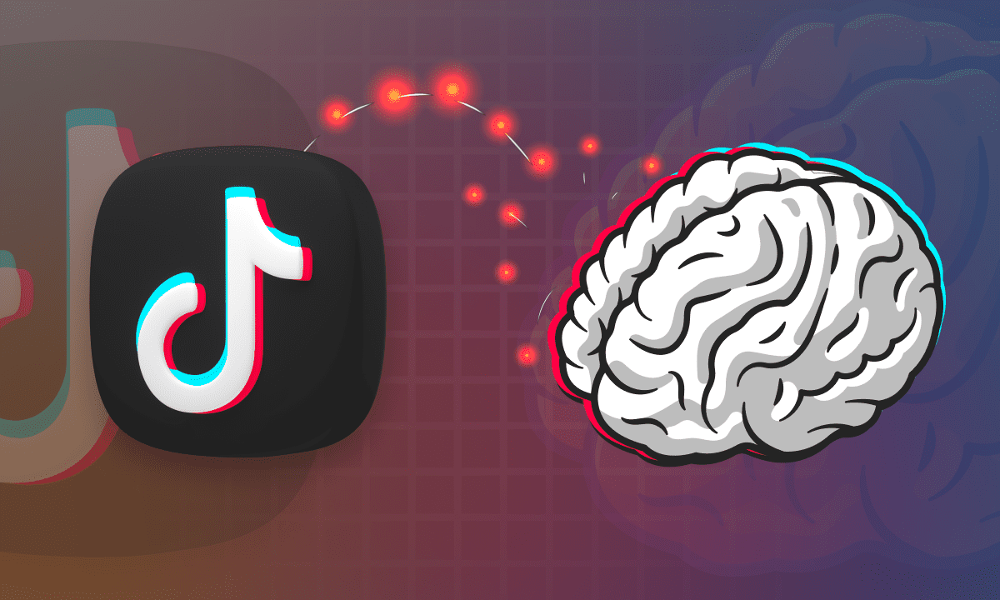

TikTok, dopamine and the brain’s reward circuit.
Social networks work in the following way: the consultation of content is free. Social networks are remunerated by broadcasting announcements and advertisements, or by providing our personal information (consumption habits for example). The longer the user stays on the network each day, the more money the platform earns.
TikTok is excellent in this area and crushes all its competitors. A large portion of TikTok users spend up to 90 minutes a day on the social network. And this is mainly due to the algorithm which offers content to the user in an ultra-relevant way.
To provide the most pleasant video content possible for users, TikTok collects a lot of information in real time: Contact information, location, browsing history, viewing time for each video, likes, time spent in comments, shares, etc. ...
It is a gold mine used by the TokTok algorithm to make us stay as long as possible on the social network.
TikTok is based on the reward circuitry, and the secretion of dopamine. For this, it makes user interactions as simple as possible. The only action the user must do is to swipe to the next video, while following an endless stream of videos, which are highly likely to please us.
For each video the user will receive a "shot" of dopamine if he likes the video. Also a “shot” of dopamine if the video does not please him, in fact, the user who hopes to see content that he likes works like a slot machine in a casino. If he likes the video, he will be rewarded, and if he doesn't, he will hope that he likes the next video.
We see that this brain reward system is very well used by TikTok, which is doing a lot of research in neuroscience to best determine the cognitive biases that will allow the user to reset on the social network.
The advice that many users “addicted” to TikTok today is to never install it. It is an intrusive network and very bad for the brain, which secretes dopamine in large quantities when using the social network. While it should normally be secreted in really rewarding actions: (eating chocolate, feeling of accomplishment, sport, sexual relations etc).
https://www.lejdd.fr/Economie/tiktok-la-drogue-dure-du-xixe-siecle-4111289https://www.lejdd.fr/Economie/tiktok-la-drogue-dure-du-xixe-siecle-4111289